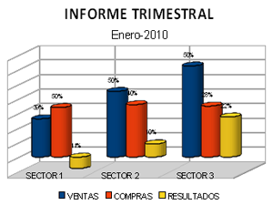
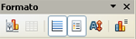
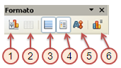

Hojas de cálculo
5.3. Modificar un gráfico
Los gráficos son un elemento más de la hoja de cálculo y como tal, podemos aplicar sobre ellos las opciones de edición más comunes: copiar, cortar y pegar. Y todo a un clic, claro.
- Para seleccionar un gráfico, sólo tienes que hacer clic con el ratón sobre él.
- Para mover un gráfico, puedes arrastrarlo con el ratón.
- Para redimensionar un gráfico, arrastras los cuadros de situación que aparecen el las esquinas y en los lados.
En el siguiente vídeo tienes un tutorial para modificar los gráficos de la hoja de cálculo Calc.
|
Cuando tenemos un gráfico creado, muchas veces es necesario modificar alguno de sus elementos. Para facilitar esta acción, el programa permite seleccionar los elementos del gráfico individualmente.
Una vez seleccionado un elemento haciendo doble clic sobre él, podemos activar el cuadro de diálogo de dicho elemento utilizando el menú auxiliar.
Como ya has hecho el gráfico en el punto anterior, utilízalo para estudiar las opciones de modificación de sus elementos.
|

|
Comprueba lo aprendido
Solución
Solución
Solución
Una vez que tenemos un gráfico seleccionado, existe la opción de modificar las propiedades del gráfico utilizando una barra de herramientas. Para activarla, sólo es necesario acceder al menú "Ver", "Barra de herramientas", "Formato".

Comprueba lo aprendido
¿Qué propiedades podemos modificar con cada opción de esta barra de herramientas? Investígalo e indica el número al que corresponde.

Obra publicada con Licencia Creative Commons Reconocimiento No comercial Compartir igual 4.0